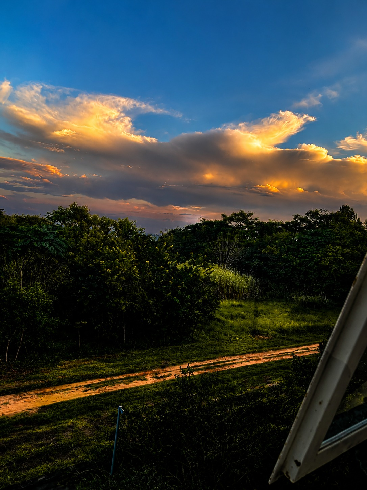
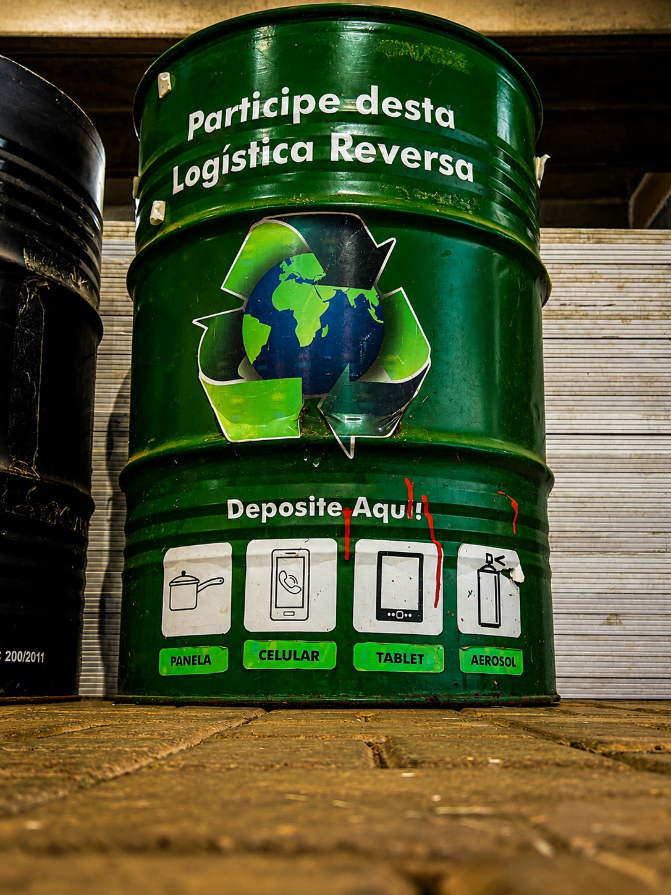
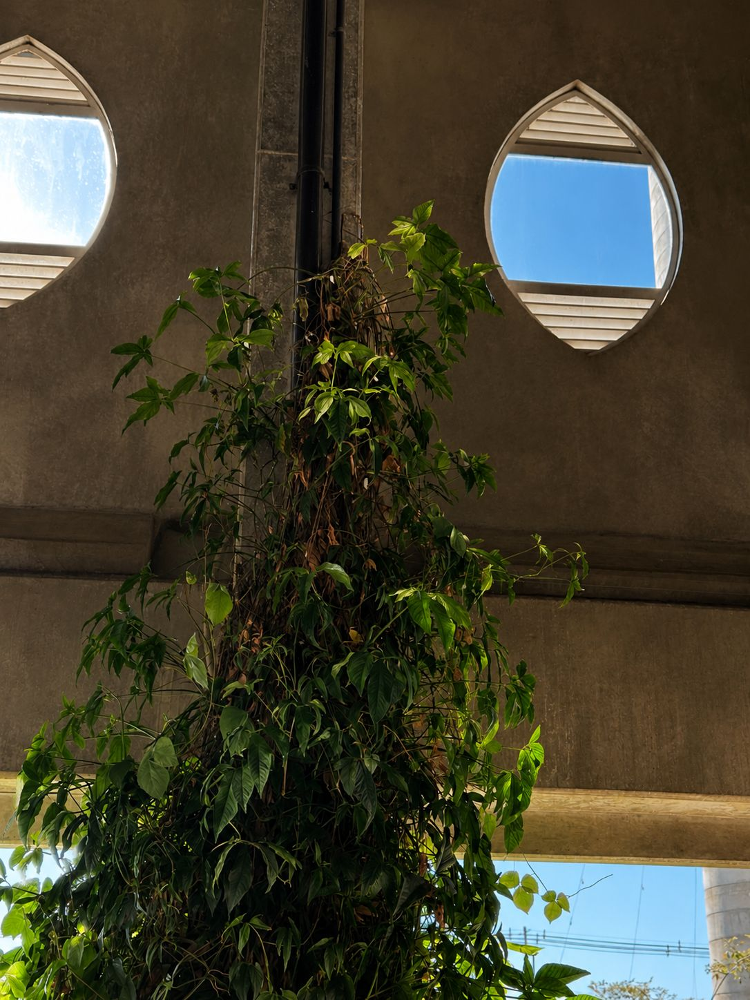
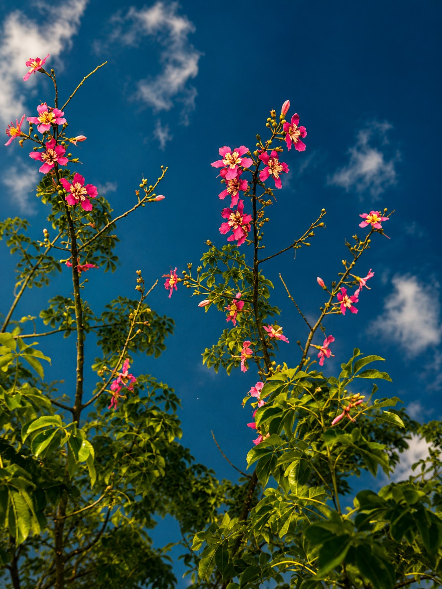
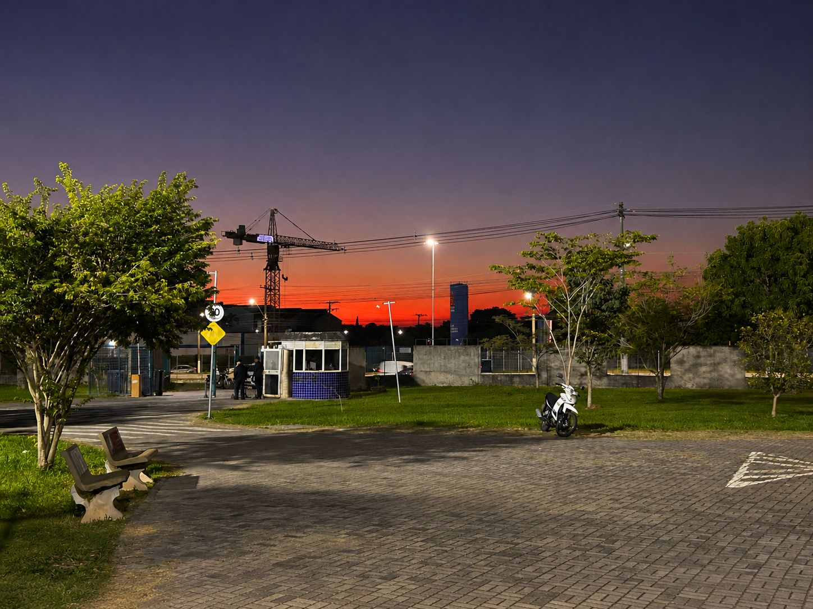
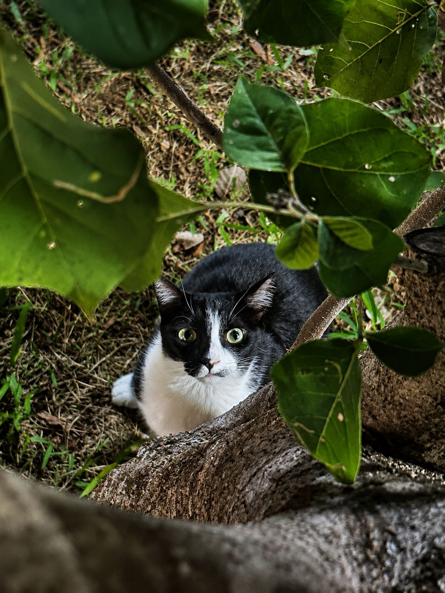
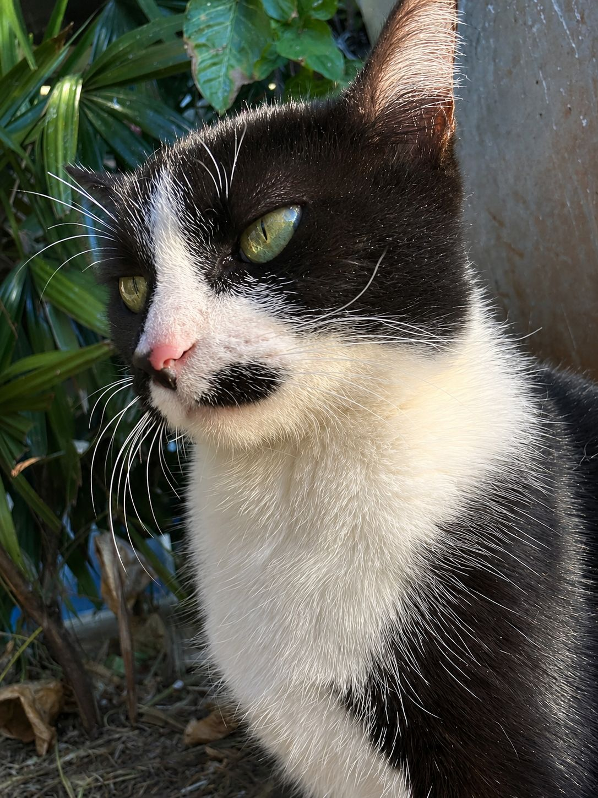

📷 img/fatec-img1.png
Um olhar fotográfico sobre a beleza frágil do nosso planeta — capturado para despertar consciências e inspirar mudanças reais.
Explorar GaleriaCada imagem é um convite à reflexão sobre a beleza que precisamos proteger.







Portfólio fotográfico desenvolvido para a disciplina de Interação Humano-Computador (IHC) em celebração ao Dia Mundial do Meio Ambiente — 5 de junho, data instituída pela ONU para promover conscientização, sustentabilidade e respeito ao planeta.
Criar um site de portfólio fotográfico para expor imagens relacionadas ao meio ambiente, unindo estética moderna e princípios de IHC. O projeto busca sensibilizar o visitante por meio da fotografia — linguagem universal que comunica onde palavras não chegam.
Estrutura semântica com tags como <header>, <section>,
<article> e <footer> para acessibilidade e SEO.
Variáveis CSS, Grid Layout, Flexbox, animações com @keyframes,
transições suaves e media queries para responsividade total.
Código puro sem frameworks: módulos IIFE, IntersectionObserver,
scroll events, manipulação do DOM e localStorage para persistência do tema.
Tipografia Poppins (Light, Regular, SemiBold, Bold e Black) para hierarquia visual clara e leiturabilidade confortável em qualquer tela.
Biblioteca de ícones SVG via CDN para representação visual de ações, navegação e elementos decorativos com consistência e acessibilidade.
Controle de versão e hospedagem do repositório. Estrutura de pastas
organizada em css/, js/ e img/
conforme exigido pela atividade.
data-theme no HTML,
com persistência em localStorage e transição suave entre paletas.
IntersectionObserver nativo do navegador.
scrollTo({ behavior: 'smooth' }).
Navbar sempre visível, indicador de scroll na hero e botão "voltar ao topo" garantem que o usuário sempre saiba onde está e para onde pode ir.
Hover nos cards, botões e links com mudança de cor, escala e sombra comunicam interatividade imediata ao usuário.
Tamanhos de fonte, pesos tipográficos e espaçamentos bem definidos guiam o olhar do visitante do mais importante ao menos importante.
Layout fluido que se adapta a celulares, tablets e desktops com breakpoints em 480px, 768px e 1024px.
Atributos aria-label, aria-expanded, foco
via teclado nos cards e texto alternativo em todas as imagens.
Modo escuro reduz fadiga ocular em ambientes com pouca luz, preservando a identidade visual e a paleta de cores do projeto.
"A Terra não é uma herança dos nossos pais — é um empréstimo dos nossos filhos." — Provérbio Indígena